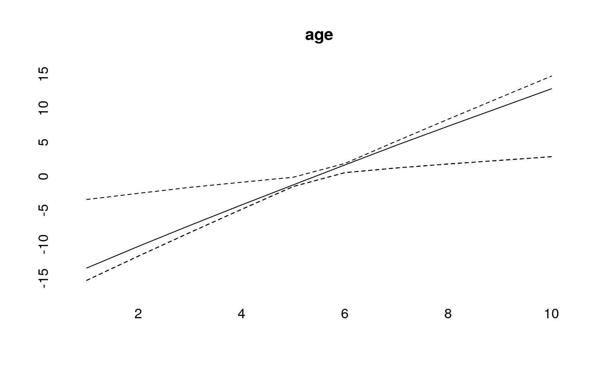
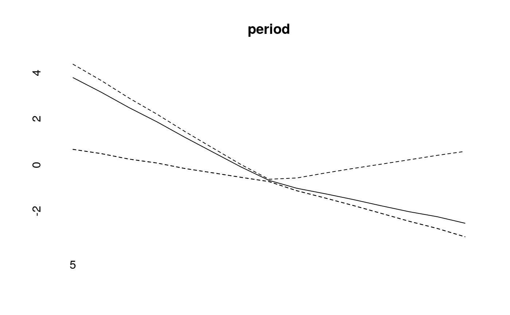

Simulating Age-Period-Cohort Data
Volker Schmid
2020-01-09
simulation.Rmd

periods_per_agegroup=5
number_of_cohorts <- periods_per_agegroup*(10-1)+15
cohort<-rep(0,60)
cohort[1:15]<-(14:0)
cohort[16:30]<- (1:15)/2
cohort[31:60]<- 8
cohort<-cohort/10
cohort<-cohort-mean(cohort)
plot(cohort, type="l")
simdata<-apcSimulate(-10, age, period, cohort, periods_per_agegroup, 1e6)
print(simdata$cases)## [,1] [,2] [,3] [,4] [,5] [,6] [,7] [,8] [,9] [,10]
## [1,] 2 7 13 45 68 123 171 408 1175 3017
## [2,] 3 6 18 49 67 102 145 286 816 2165
## [3,] 0 5 18 28 62 103 127 260 597 1642
## [4,] 0 4 16 22 51 67 102 164 425 1234
## [5,] 0 6 15 12 40 78 92 116 327 864
## [6,] 0 1 7 13 26 52 86 100 258 686
## [7,] 0 2 4 18 30 47 76 82 209 522
## [8,] 0 3 5 12 29 41 69 84 125 428
## [9,] 2 4 9 17 30 55 86 96 166 400
## [10,] 1 0 10 19 32 67 95 136 171 453
## [11,] 0 2 13 28 42 76 141 163 204 482
## [12,] 1 4 11 27 53 106 170 225 290 600
## [13,] 0 5 12 30 68 152 198 296 317 619
## [14,] 2 4 19 47 89 151 294 375 462 714
## [15,] 3 7 14 45 116 200 335 457 654 777simmod <- bamp(cases = simdata$cases, population = simdata$population, age = "rw1",
period = "rw1", cohort = "rw1", periods_per_agegroup =periods_per_agegroup)print(simmod)##
## Model:
## age (rw1) - period (rw1) - cohort (rw1) model
## Deviance: 134.81
## pD: 49.18
## DIC: 183.99
##
##
## Hyper parameters: 5% 50% 95%
## age 0.679 1.610 3.230
## period 14.287 27.346 47.671
## cohort 77.210 122.990 188.227checkConvergence(simmod)## [1] TRUEplot(simmod)


effects<-effects(simmod)
effects2<-effects(simmod, mean=TRUE)
#par(mfrow=c(3,1))
plot(age, type="l")
lines(effects$age, col="blue")
lines(effects2$age, col="green")


prediction<-predict_apc(simmod, periods=5, population=array(1e6,c(20,10)))plot(prediction$cases_period[2,], ylim=range(prediction$cases_period),ylab="",pch=19)
points(prediction$cases_period[1,],pch="–",cex=2)
points(prediction$cases_period[3,],pch="–",cex=2)
for (i in 1:20)lines(rep(i,3),prediction$cases_period[,i])plot(prediction$period[2,])
simmodrw2 <- bamp(cases = simdata$cases, population = simdata$population, age = "rw2",
period = "rw2", cohort = "rw2", periods_per_agegroup =periods_per_agegroup)print(simmodrw2)##
## Model:
## age (rw2) - period (rw2) - cohort (rw2) model
## Deviance: 141.03
## pD: 29.42
## DIC: 170.45
##
##
## Hyper parameters: 5% 50% 95%
## age 46.914 153.890 440.482
## period 79.724 181.478 367.538
## cohort 632.549 1345.253 2674.138checkConvergence(simmodrw2)## Warning: MCMC chains did not converge!## [1] FALSEplot(simmodrw2)
cov_p<-rnorm(15,period,.1)simmod2 <- bamp(cases = simdata$cases, population = simdata$population, age = "rw1",
period = "rw1", cohort = "rw1", periods_per_agegroup =periods_per_agegroup,
period_covariate = cov_p)